<<2016年2月 | トップページ | 2016年4月>>
2016年3月
「春はLet's ○○」［杉本瑛］
皆さん、ジェアグゥィチトロノーナ（ アイルランド語で「 こんにちは 」）！
今回のお題は「 春はLet's ○○ 」です ☆
瑛の「 春はLet's ○○ 」は２つあります！
１つ目はLet's お花見です (^o^)
春に満開に咲くお花たちを見ていると、
春が来たなぁって感じるんです！
そして、新しい学年もがんばろうって思います (*^_^*)
これは、おじいちゃんのお家の近くの桜 (^○^)
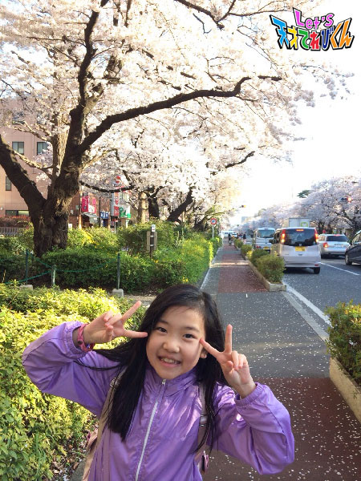
満開の桜が花のカーペットを作ってくれてるようで、
お気に入りなんです ( ^ω^ )
２つ目は、Let's エンジョイ music♪
春はマリンバの発表会や和太鼓の発表会があるんです（≧∇≦）
今年、マリンバの曲は“ ウィリアム・テル序曲 ”を練習しています ☆彡
これまで“ 道化師のギャロップ ”、“ 天国と地獄 ”をしたので、
【 運動会でよく使われる曲 】シリーズなんです。
おなじみの曲だし、自分でもわーっと盛り上がるように演奏したいです (^o^)
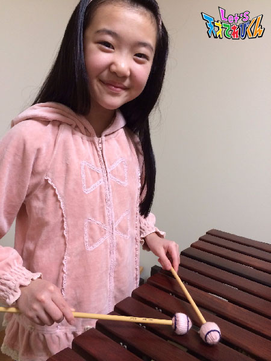
和太鼓は“ 大地 ”と“ 楽 ” という曲をやっています！！
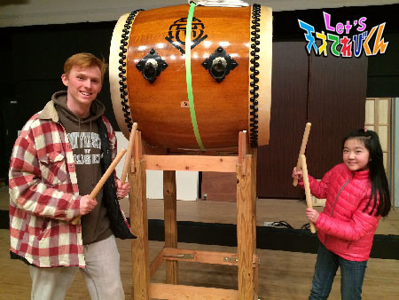
“ 大地 ”はとてもカッコ良い曲なので (o^^o)
瑛が担当する締め太鼓で華やかに彩りたいと思います！
“ 楽 ”は題名どおり楽しい曲で、
踊りながら演奏するので、思いっきりはじけたいです！
お花も音楽も、人の心を豊かにして自然と笑顔にしてくれるので、
大切にしていきたいです ^_－☆
投稿者:杉本瑛 | 投稿時間:18時45分 | カテゴリ：てれび戦士 | 固定リンク
「春はLet's ○○」［林武尊］
こんにちはー
林 武尊です！！
この前、友だちとアスレチックにいってきました。
最近あんまり運動をしてなかったので、とっても気持ちよかったです！
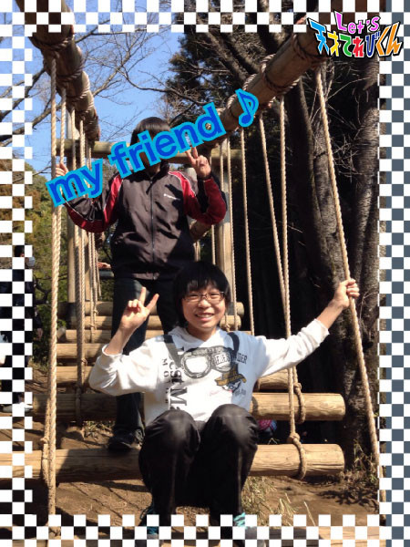
綱渡りをしているとき、
下が地面じゃなくて池だったので、
すごく緊張して、手が震えてました ((((；ﾟДﾟ)))))))
でも、その日は暖かくて逆に飛び込みたかったです！！（≧∇≦）
楽しかったー
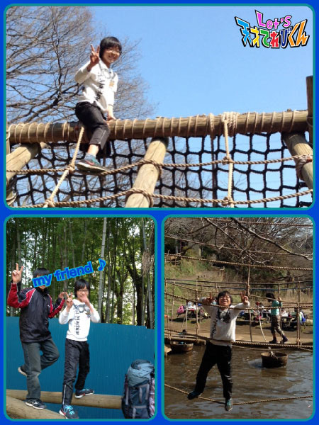
もう春です！！
春はいいですよね～
寒くもなく暑くもなく、
ちょうどいい温度で、おいしいものもたくさんあるしー (*^_^*)
新しい生活になったりもする。
そこで今回のお題は～
～ 春はLet's ○○ ～ です！
ぼくの○○は何か分かりますか？
４月から中学生なので、ぼくは・・・
Let's 中学生活です！！
もう今からめちゃくちゃ楽しみです！！
新しい先生や友達にあったり、
いままでなかった学校の教科があったり、
でも僕がいちばん楽しみなのは・・・
部活です！！
入ろうと思っているのはちょっと得意で楽しいテニス部です！
まだわからないことだらけだけど、
中学校では、一生懸命、部活や勉強をがんばります！！
ではまたー
投稿者:林武尊 | 投稿時間:18時54分 | カテゴリ：てれび戦士 | 固定リンク
「春はLet's ○○」［齋藤茉日］
みなさ～ん！
こんにちは (*^^*)
ハックシュン (( _ _ ))..
花粉の春がやってきました、
私は花粉症なので、この時期くしゃみが止まりません (-_-)
そんな春だってとことん楽しんじゃおう！！
と言うのが今回のテーマです！
てれん！
「 春はLet's ○○ 」
春は新生活をする人や進級進学の時期なので
イメチェンしたり (=´∀｀)人(´∀｀=)
新しいことに挑戦する人も多いのでは♪
そこで私は。。。！！
「 春はLet's かめら 」
です！！
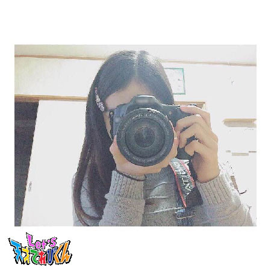
もともと写真を撮ることは好きで
スマートフォンでよくカメラを使うんですけど
ずっと一眼レフに憧れていて。。。(*^^*)
家に一眼レフがあることを知ったので
少しずつ学んでいきたいです！
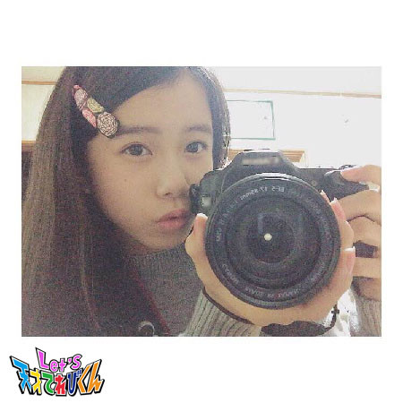
ぱしゃぱしゃ
早く上達しないかなぁ。。。
な～んてね！！
笑笑 *\(^o^)/*
２月、仙台にカメラの異次元獣が来ましたね！
そのときは、一応カメラの異次元獣対策のために
練習はやめておきましたよ！！
みなさん被害はなかったですか？？
大野課長はなんだか大変なことになってましたけど
無事に動けるようになってよかったです♪
あとあと！ 私・・・
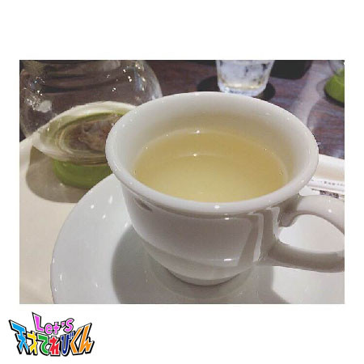
ハーブティーが好きなことに気がつきました！！
ハーブティーって飲めたらかっこいいなぁ
って思っていて、ファミリーレストランで飲んでみたら。。。
「 ん！？ お、おいしい！！ 」
ちょっとカッコよくなったかな～笑笑
好きな飲みものが増えるといいな！
好きな飲みものをカメラで写すことが
私の理想だわ～！！
それでは今回はこの辺で
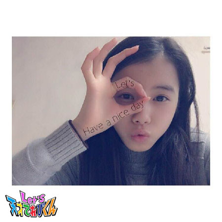
みんなは、春からなにか始めますか？？
またね～！！
投稿者:齋藤茉日 | 投稿時間:18時45分 | カテゴリ：てれび戦士 | 固定リンク
「春はLet's ○○」［小西憧弥］
こんにちは！憧弥です！
もう３月！
小学校卒業です。
６年間、一緒に学校に通ったランドセルともお別れなので、
記念に写真を撮りました。
６年生まで使ったらボロボロになってるだろうなって思ってたけど、
結構キレイでした。
お別れって、考えたらさびしい (>_<)
６年間、ありがとう！
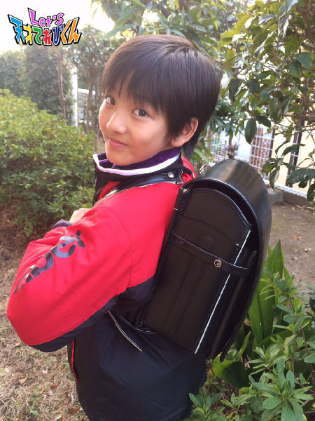
本題『 春はLet's ◯◯ 』です！
ぼくは花粉症だけど、外で遊ぶのが好きなので、
耳鼻科でもらった薬を飲んで、外で遊んでます！
中学生になるから、大きな自転車も買ってもらいました。
だから、春はサイクリングに行きたいです。
釣りもキャンプも行きたいけど、
子どもだけじゃ行けないから、まずはサイクリング！
お天気がいいときに、おにぎりを持って、
行ったことがないところまで行ってみたいなぁ。
だから、春はLet's サイクリング！！
投稿者:小西憧弥 | 投稿時間:18時45分 | カテゴリ：てれび戦士 | 固定リンク
「春はLet's ○○」［桐畑カレン］
こんにちは。
カレンです (*^^*)
突然ですが、
私は明治時代に建てられた西洋風の建物が、
とっても好きなんです (^^)
ということで、
この前【 迎賓館・げいひんかん 】が一般公開されると聞いて行ってきました。
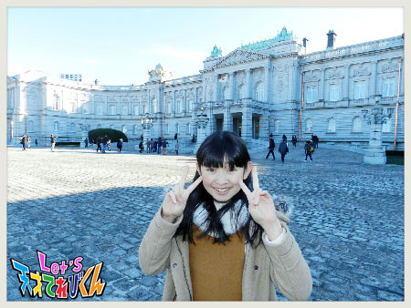
建物の外を見てうっとり・・・
建物の中を見てさらにうっとり・・・
すばらしかったです ヽ(*´▽)ノ♪
最近は暖かい日が増えてきて、
もうすぐ春だな～って感じる日が多くなってきましたね。
暖かい春になったらやってみたいこと、それは・・・
♪森・林・浴♪
小さいころ京都に住んでいたとき、
家の近くの植物園に
お散歩に行くのが大好きだったみたいです (*^-^*)
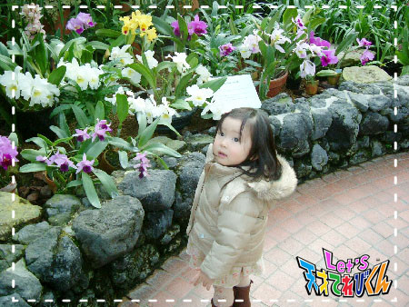
今でも、緑がたくさんあるところが落ち着きます。
緑がたくさんある中に入ったときに
「 ひんやり 」する感じとか、木の不思議な匂いが好きなんです。
森林浴は森に行かなくても、
木がたくさんある公園でできるそうですよ (^^)
よし、暖かくなったら木がたくさんある公園にでかけて、
マイナスイオンでいやされよう～！
Let's 森・林・浴！
投稿者:桐畑カレン | 投稿時間:18時45分 | カテゴリ：てれび戦士 | 固定リンク
「春はLet's ○○」［瀧澤翼］
こんにちは！
３月２日に13歳の誕生日を迎えた瀧澤翼です！！
この前、お父さんとゴルフ練習場に行ってきました！
小さい頃に何度か連れていってもらったことがあるのですが
久しぶりにボールを打ったので空振りしまくりでした笑
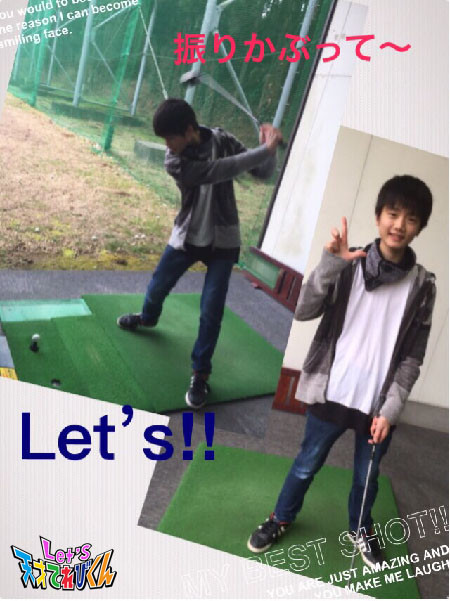
写真でもわかりますが、
実は僕、左打ちなんですよ～！
いつかはちゃんとしたゴルフ場デビューしてみたいなぁ～ ^_^
さぁ今回のテーマは「 春はLet's 〇〇 」ですね。
なんと最近、習いごとが１つ増えました！
それは殺陣（ たて ）です！！
将来、時代劇もやってみたいなぁ～っと思い、始めました！
なので今年の春から殺陣をがんばりたいです！
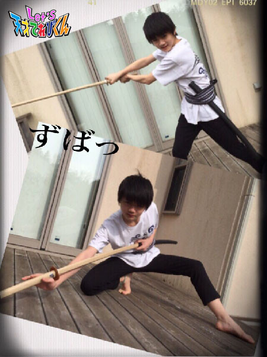
抜刀（ ばっとう ）や納刀（ のうとう ）などさまざまな技を覚えて、
将来に役立てたいなぁと思いました！
自分専用の木刀をお父さんとお母さんに買ってもらったので
いつでも練習できます！
よし、特訓ダァ～＼(^o^)／
Let's 殺陣！
投稿者:瀧澤翼 | 投稿時間:18時45分 | カテゴリ：てれび戦士 | 固定リンク
「春はLet's ○○」［赤崎月香］
こんにちは ヽ(^▽^@)ノ
赤崎月香です。
岩手県に行ったときは、
たくさん雪が積もっていて、寒かった～ (((=_=)))
でも、とっても楽しかった～♪
初めて東北地方に行きました！！
雪がサラサラでふわふわでキレイ！！
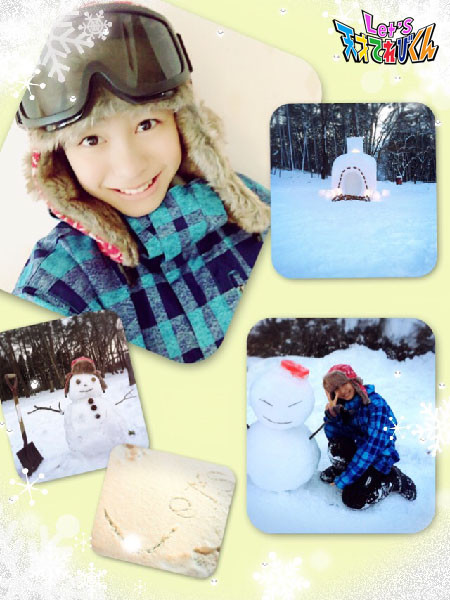
岩手県で雪遊びをしたのがちょっと前だったのに、
もう春の気配がします・:*:・(￣∀￣ )。・:*:・
登校中につくしを見つけましたよ♪
☆。・:*:・°★,。・:*:・°☆
『 春はLet's ○○ 』
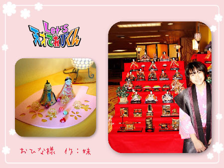
春はLet's ひな祭り！
おひな様の着ている着物は、
キレイな色でステキですよねー (*'▽'*)♪
キラキラしていて、私も着てみたいな～
家族でひな祭りパーティをしましたよ♪
ポカポカ暖かい春になると、
いろんなことにチャレンジしたくなりますよね！！
よーーーし！！！！！
私の春からチャレンジしてみたいこと (*￣0￣*)ノ
じゃじゃじゃじゃーーーん！！！！！
☆ Let's！！ 海外旅行！！
☆ Let's！！ 犬を飼う！！
☆ Let's！！ 勉強をがんばる！！
全部したい！！ｐ(*^-^*)ｑ
叶えるために、着々と準備していますよ。
新学期も良いスタートが切れそうです♪
☆。・:*:・°★,。・:*:・°☆
その前に・・・・・・
腹ごしらえ (〃⌒∇⌒)ゞえへへ♪
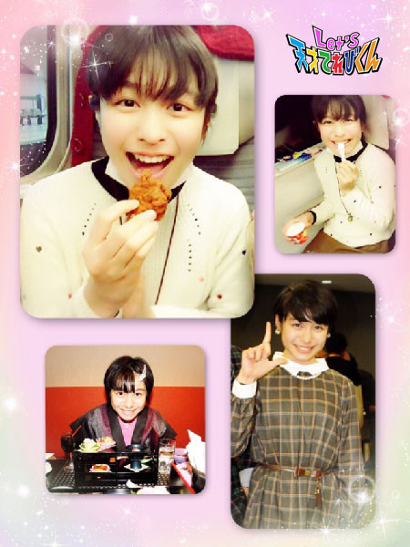
春はやっぱり花より団子～
新学期もがんばろう！！
ばいばい またね～ ヾ(*'-'*)
投稿者:赤崎月香 | 投稿時間:18時54分 | カテゴリ：てれび戦士 | 固定リンク
「春はLet's ○○」［小澤竜心］
こんにちは！竜心です。
寒かった冬が終わって・・・、
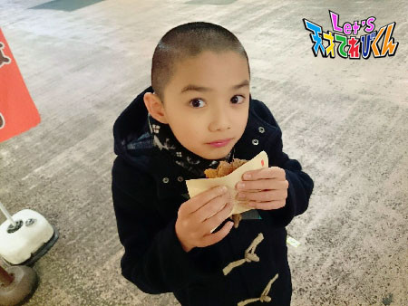
桜がちらほら咲いてきて、春ですね～♪
ぼくの『 春 』は、「 Let's！ 学校！！ 」です。
４月から、いよいよ６年生です！
今、学校では、
入学式や運動会の鼓笛（ こてき ）の練習に、はげんでいます。
新しく１年生が入学してくるので、
と～～っても楽しみです♪
おにごっこや、ドッジボールなど、
１年生と一緒にいろいろ遊びたいです！
学校のみんなでやるサッカーも、あと１年だ・・・
最上級生になるので、みんなに優しく、
仲間を大切に、
学校のいろんなことをがんばりたいですo(^o^)o
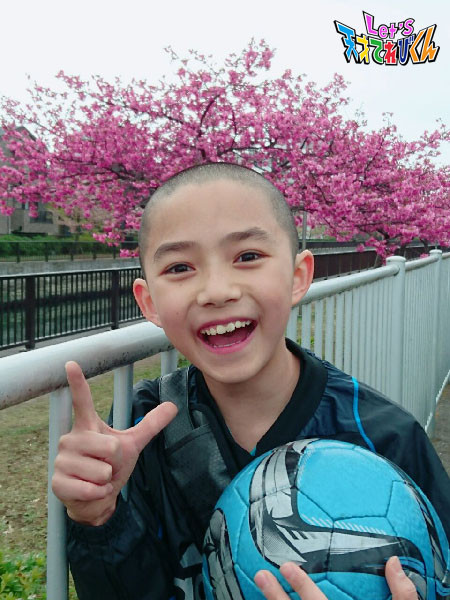
もう一つは、 「 Let's！ お花！！ 」
桜やたんぽぽ、マーガレットなど、
『 春 』に咲くお花がいっぱいあります (о´∀`о)
その中でも、桜はいろいろな種類があるので、
いろんな所に見に行って、観察したいです！
今年は、みんなでお花見できるといいな～。
投稿者:小澤竜心 | 投稿時間:18時45分 | カテゴリ：てれび戦士 | 固定リンク
「春はLet's ○○」［飯島緋梨］
こんにちは ^o^
飯島緋梨です！
春はとっても良い季節ですね！
と言いたいところですが、
花粉が・・・
も～毎日つらすぎます (>_<)
花粉がなければ春が大好きなのに～ (~_~;)
がんばります。笑
花粉がいっぱいで外で遊ぶのはつらいので、
家の中で遊んでいます。
今、緋梨がハマっているのは
UVレジン（ 紫外線硬化樹脂 （ しがいせんこうかじゅし ））でアクセサリーを作ること！
UVレジンは太陽の光に当てて紫外線を浴びると、
水のりのようだったUVレジン液がプラスチックのように固まって、
自分だけのオリジナルストラップや
アクセサリーを作ることができるんです！
春といえばぽかぽかと暖かい太陽ですよね！
その太陽の光に当てて、自分で作るのが楽しい～～
作ったストラップやアクセサリーは、
お友達にプレゼントしたりして喜んでもらえるので
すごくうれしい (^_^)
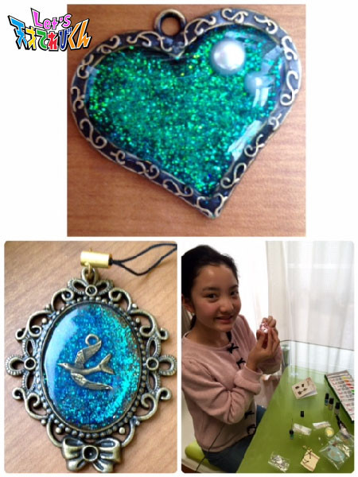
投稿者:飯島緋梨 | 投稿時間:18時45分 | カテゴリ：てれび戦士 | 固定リンク
「春はLet's ○○」［辻村晃佑］
やぁ辻村晃佑だよ！ ( *・ω・)ノ
みんな、 こんにちはーー ( ゜▽゜)/
いやーもう少しで僕も中学３年生だよ！？
僕が生まれたのが14年前なんですよー！
あと１年で高校生！
あと６年で成人式！
もうすぐ大人なんだなぁと思いました (о´∀`о)
それでは聞いてください！
14の夜～～♪♪
・・・・・
今、曲が流れると思った人、正直に言いなさい ヽ(`Д´)ノ
先生怒んないから （#＾ω＾）ピキピキ
なぁんて、恒例の茶番タイム終了でーす ( ´,_ゝ`)
さて、こっから本題です！
今回は「 春はLet's 〇〇 」です！
４月から受験生だからねー
だから僕は
「 春はLet's “ 受験シーズンになったらできなくなること ” をいろいろやる 」
です！！
少し長くなった (´・∀・`)
いろいろっていうのは、英検をがんばって３級をとったり
（ ４級と５級は１月に受験して合格したんですよ～ ）、
料理とかもいろいろ作ったり
ときどきゲームとかしたり・・・
受験シーズンまっただ中にはできなくなりそうなことを
この春のうちにいろいろやっちゃおうということです！！！
そして「 春はLet's ～ 」の第１弾！で、
たけるとカレンと一緒にお芝居を見に行って
そのあとに水族館も行ってきました！！
これは水族館に行ったときの写真でーす (｀・ω・)
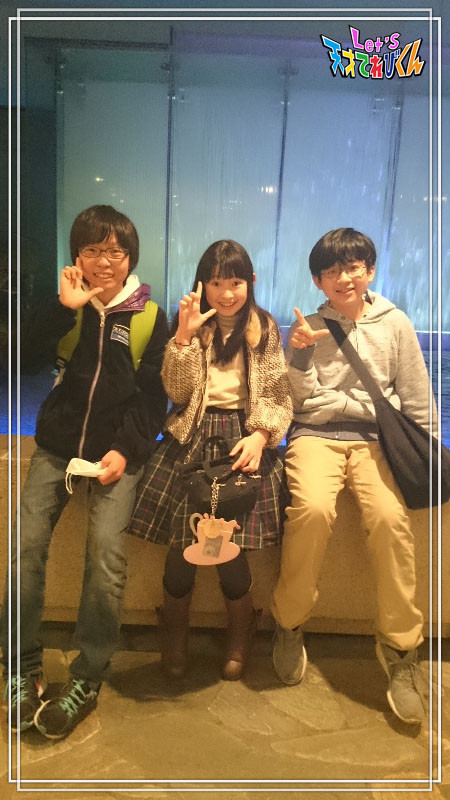
受験シーズンに入ると、
勉強だぁぁぁぁぁ勉強だぁぁぁぁぁぁ勉強だぁぁぁぁぁぁ
と、勉強しかないと思うので、
その前に春を満喫して受験に臨みたいですねぇー！(￣ー+￣)
中学３年生になったら修学旅行があって
すごく楽しみなんですよねー
ちなみに東北に行って農業体験とかしたりするらしいです (*｀ω´*)ドヤッ
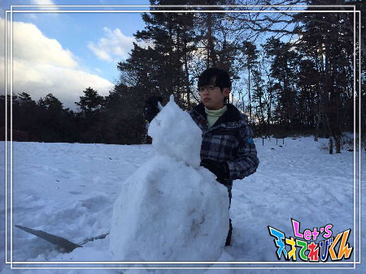
春だからさすがに雪はないと思いますけどね！
話がずれたけど今回はここまで！ o(・`д・´。)
またねー ( ´ ▽ ` )ノ
投稿者:辻村晃佑 | 投稿時間:18時45分 | カテゴリ：てれび戦士 | 固定リンク
「春はLet's ○○」［原田明莉］
☆ Hello ☆
明莉です！
最近は暖かくなってきましたねー！
私はどちらかというと寒いより暑い方が好きなのでうれしいです！！
そしてそして卒業式の日がどんどんせまってきましたーー泣泣
本当にあと少しの時間を大事に大事に過ごしていきたいと思います！
ではでは本題に入りたいと思います！
今回のテーマは
「 春はLet's ◯◯ 」
です！！
私は、いろいろな慣れることについてがんばりたいです！
４月にはもう中学生！！！
中学生になると変わることは、大きくわけて私の中では３つ！
・私服から制服に！
・人の関係性！
・勉強の大変さ・・・
この３つについて、しっかり慣れるようにがんばりたいです！
１つ目の【 私服から制服に 】は、結構不安なんですよ！
制服を買いに行って試着したときに
ワイシャツの第１ボタンがしめられなくて結構困りました！
だからちゃんと１人で制服が着られるようにがんばります！
２つ目の【 人との関係性 】は、
いろんな学校からたくさんの子たちが来てクラス数も３倍になるし、
新しいメンバーといい関係が作れるようにがんばります！
それと上下関係がでてくるんですよね！
先輩とも同学年の子ともみんなと仲良くできたらいーな！
で
３つ目は
教科も増えて勉強も一段と難しくなるので
それもがんばらなきゃ！と思います！
中学生になる日がどんどんせまってるんです！
小学生のままでいたいって思ったりするけど、
中学生になることに楽しみなところもあるし
少し不安なところもあります！
でも全力で楽しむために一生懸命がんばります！
あと少しの小学校生活の時間も
大事に大事に楽しんで過ごしたいと思います！
私の
「 春はLet's ◯◯ 」とは
『 いろんなことに慣れる！ 』
です！
みなさんは春にやってみたいことはありますかー？
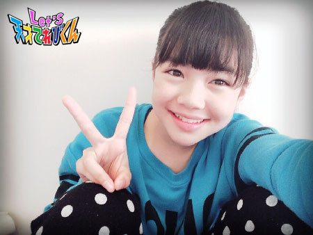
投稿者:原田明莉 | 投稿時間:18時45分 | カテゴリ：てれび戦士 | 固定リンク
「春はLet's ○○」［笹原尚季］
こんにちは！
いつも元気な笹原です！
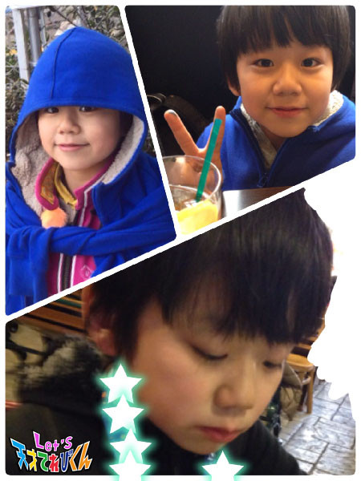
冬の間大変お世話になったもふもふパーカー、とっても離れがたいです。
でも花粉には勝てない・・・(>_<)
目はかゆいし、くしゃみも止まらないし
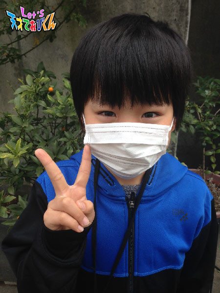
あきらめて、花粉の付きにくいパーカーにしてお出かけです。
マスクが欠かせない季節になりました。
前にペットを２匹飼っていることをお話ししましたね。
かめさんは毎日こうら干しをがんばって、とっても成長しました！
でも、くまさんは（ ハムスターの名前です ）全然成長しません・・・(°_°)
食べるものや量で、すぐに太ったりやせたりはするけど、
全然大きくなりません。
心配・・・
と、思っていたら！！
エサを買いに行ったペットショップで、
１／３サイズのキンクマハムスターちゃんを発見。
あれれ？？
うちのハムスターは、もうおとなだったのかも。
あいかわらず２匹ともかわいいです♪
それでは、本題に入ります！
今回は、「 春はLet's ○○ 」です！
春といえば、お花見ですよね！
でも、僕が楽しみなのは、運動会と、新学期が始まることです！
運動会では、団長になりたいです！
みんなの前に立って、笛を吹いたりしてすごく楽しそうだからです。
ちなみに、去年は副団長をやりました。
とっても楽しかったです ^_^
新学期では、仲のいい友達と同じクラスになれるかなぁーとか、
どんな先生なのかなぁーって気になります！
すごく楽しみです！！
あと、新年度から通学班の班長になります (^｡^)
がんばります！
投稿者:笹原尚季 | 投稿時間:18時54分 | カテゴリ：てれび戦士 | 固定リンク
とっておきの写真！［齋藤茉日］
こんにちは～ ( ´ ▽ ` )ﾉ
茉日です！
今回のテーマは「 とっておきの写真！ 」
です。
私、写真を撮ることが大好きで
外出して、写真を撮らないときはない！
というぐらいたくさん写真を撮ります！
例えば。。。
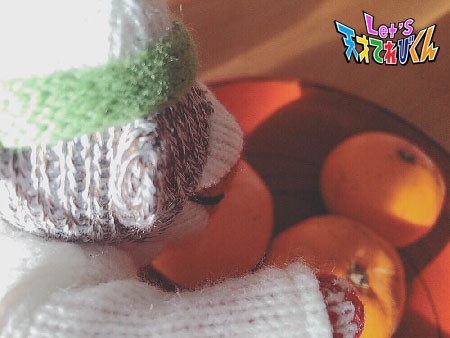
なんだか、冬を感じませんか？？
セーターを着たお猿さんがみかんに手を出しているところ。。。
光の感じやボケ方がかわいく感じてお気に入りです (o^^o)
あとはこんな感じも。。。
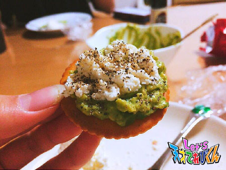
食べものの写真。
わたし的に、食べものがいかにおいしく見えるか、撮るたびに勝負しています！
ちなみに対戦相手はいません笑
この前ファミリーレストランでお母さんが食べていたデザートも。。。
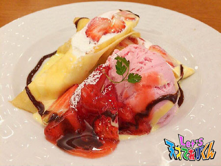
おいしそうに見えませんか？
ぜひおいしそう！と言ってください ( ´ ▽ ` )ﾉ
（元々の料理がおいしそうなだけですよね。笑）
でもとっておき、と言ったら。。。
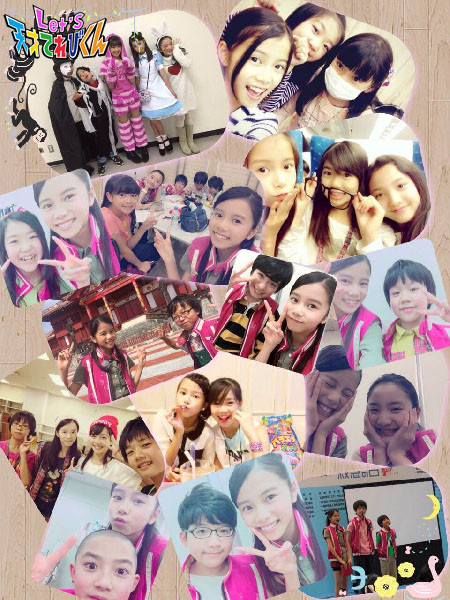
てれび戦士で撮った写真は宝物です！！
たくさんの思い出が詰まっていて
これぞまさに、とっておきの写真です *\(^o^)/*
それでは今回はこの辺で
またね！
投稿者:齋藤茉日 | 投稿時間:18時45分 | カテゴリ：てれび戦士 | 固定リンク
とっておきの写真！［小澤竜心］
こんにちは！竜心です。
ぼくは、写真を撮るのが、大好きです！
同じ景色を撮っても、
撮る人や角度によっていろんな写真になるのが、
おもしろいです！！
それでは、
ぼくの『 とっておきの写真！ 』を紹介します。
まず１枚めは、
【 東京タワーに、ふみつぶされそう～ (゜ロ゜) 】
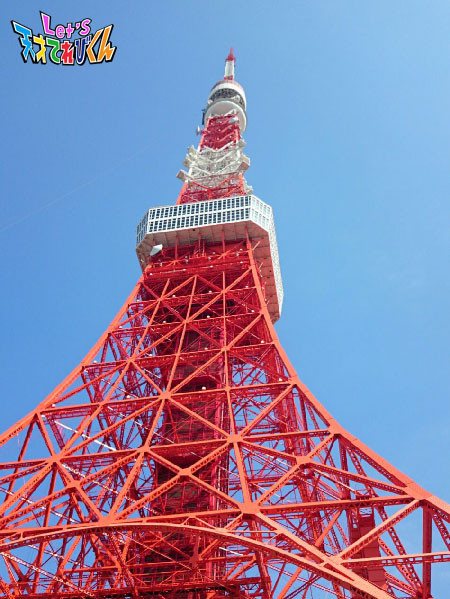
青空がキレイだったんです～(*´∇｀*)
下から撮ると、でーっかく見えて、かっこいいです！
２枚め、【 いろいろな、色 】
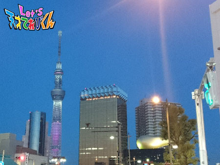
夜だったのに、明るい写真になりました☆
スカイツリーのピンクや、
青信号、赤信号、
ビルの金色などなど、
いろいろな色がキレイに写っていて、あざやかです。
夜景を撮るのは、いつもちょっと難しいので、
この写真が撮れたときは、
「 ぼく、すごいな～ ＼(^o^)／ 」
と、思いました。
またステキな写真が撮れるように、がんばります♪
最後にもう １枚、
【 お父さんを追う、ぼく・・・ 】
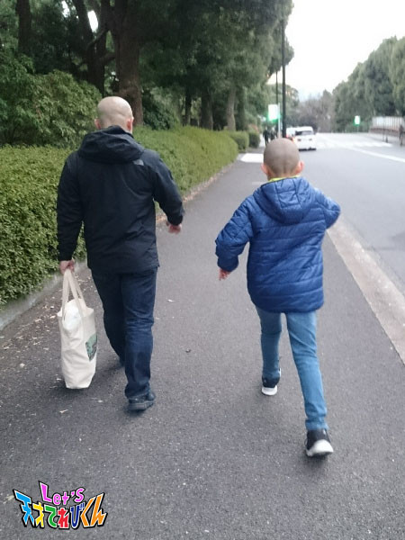
今年の武道始めの帰り道で、
お母さんが撮ってくれました！！
お気に入りの、『 とっておきの写真 』です。
投稿者:小澤竜心 | 投稿時間:18時45分 | カテゴリ：てれび戦士 | 固定リンク
とっておきの写真！［赤崎月香］
こんにちは ヽ(^▽^@)ノ
赤崎月香です。
栃木県の日光東照宮に行ってきました！
すごくキレイで、カラフルで、わくわくしました♪
ただ・・・・・・
もうちょっと歴史の勉強をしてればよかったなって、
激しく後悔したので、
勉強してまた行きたいと思います！！！ (￣‥￣)=3
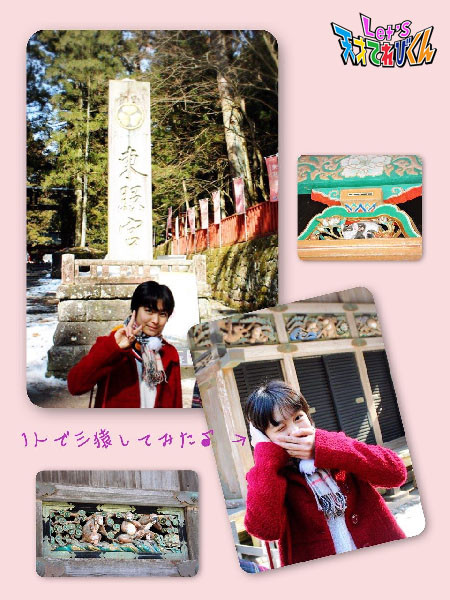
☆。・:*:・°★,。・:*:・°☆
『 とっておきの写真！ 』
たくさんあるので、悩むなぁ・・・ o(´^｀)o
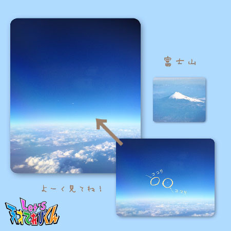
見えにくいけど、よーく見て下さい！！
２機の飛行機が写っています！！
でも！！！！！
１枚に撮りきれなかったんだけど、
実は、この２機のうしろ側に、
もう１機飛んでいるんです！！
ということは、私が乗っている飛行機と、
合わせて４機の飛行機が
並んで飛行しているんだよーーーーー！！！！！
テンション上がり過ぎて、
窓にへばりついてしまいました♪ヽ(^◇^*)/ わ～い
そして、この写真♪
飛行機雲～ ・:*:・(￣∀￣ )。・:*:・
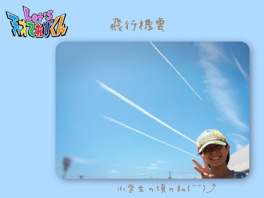
小学生の頃、家族でお買い物に行ったときに、
偶然見たものです♪
並んで飛行してたんだね～(*´∇｀*)
同時に３本の飛行機雲が見られるなんて、
ミラクル！！！！！
キレイでしょ～
うれしくて、ムダに走り回った記憶が・・・(^^;)
☆。・:*:・°★,。・:*:・°☆
飛行機雲は、いつでも見られるものじゃないんだよ。
いろいろな気象状況がそろってできるよ (。・・。)
飛行機雲が、ずっとキレイなままなかなか消えないで見えると、
雨が降るかもしれないんだって！！
やっぱり飛行機は、カッコイイ！！
大好き！！！！！
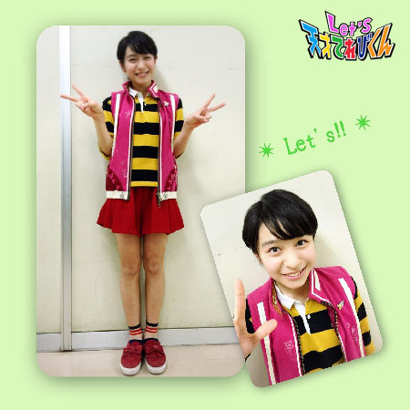
またね～ ヾ(*'-'*)
投稿者:赤崎月香 | 投稿時間:18時45分 | カテゴリ：てれび戦士 | 固定リンク
とっておきの写真！［瀧澤翼］
こんにちは！
テスト勉強に全然集中できない瀧澤翼です！
先日、千葉県の九十九里へ行ってきました。
お昼ご飯はどこで食べようかと車の外を見ていると、
看板に「 えび○○ 」と見えたので家族で入りました。
海老料理がほとんどだったので海老フライ定食を注文しました。
思っていた以上に大きい海老フライをパクリ (^ ^)
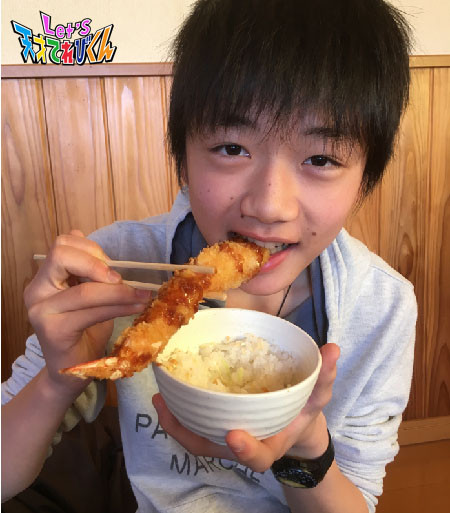
外がサクサクしてて、中がプリプリしてるおいしい海老フライを
２本も食べちゃいました？！
本当においしかったです！！
さて、今回のテーマは「 とっておきの写真！ 」ですね。
兵庫県のロケへ行ったときに撮った写真が僕のお気に入りなんです。
その写真はこちら！
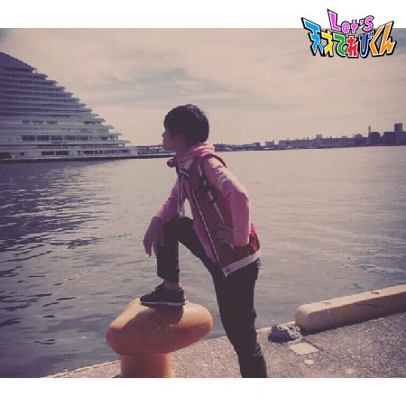
どーですか？
すごく男前風に撮ってみました！
海を眺めている男の中の男をイメージして撮ったんです。
なんか、熊本どちゃもん・どもっこすみたいですね笑
と、いうわけで今回はここまで！
また次回！
Let's picture！！
投稿者:瀧澤翼 | 投稿時間:18時45分 | カテゴリ：てれび戦士 | 固定リンク
とっておきの写真！［飯島緋梨］
こんにちは
飯島緋梨です。
この冬、みなさんの街には雪は降りましたか～？？
緋梨の住んでいるところでは、少し積もりました！！
外に出る前までは
「 やっほ～雪だ～楽しみ♪ 」って
思っていたのに・・・
寒かった (>_<) ぶるる・・・
さてさて
今回のお題は「 とっておきの写真！ 」
緋梨のお気に入りの写真は、小さい頃の写真です。
３才の頃なのですが、全然覚えてなくて
緋梨じゃないみたいです！
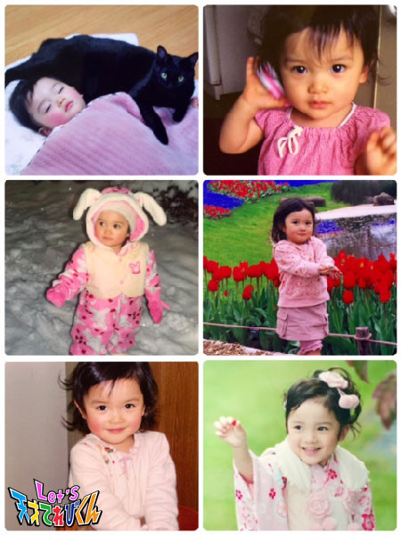
もうすぐ12才になります
こんなに大きくなりました (^^)
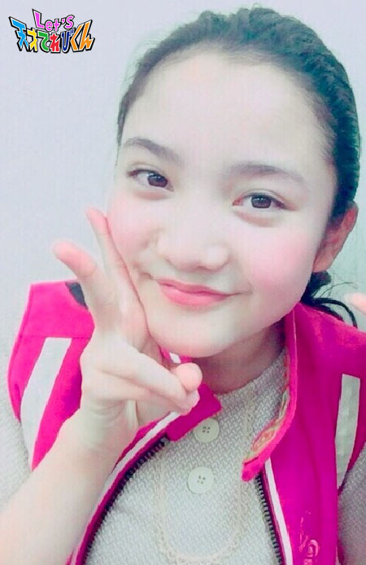
投稿者:飯島緋梨 | 投稿時間:18時54分 | カテゴリ：てれび戦士 | 固定リンク
とっておきの写真！［林武尊］
寒いですね！！
僕は冬が苦手です (´・_・`)
寒がりなんでカイロを持っていないと動けません。
でももう少しで春が来ます。
それまでがんばります。(o^－^o)
それでは本題へ。
今回は「 とってきおきの写真！ 」です！！
僕のとっておきの写真は・・・
これです！！
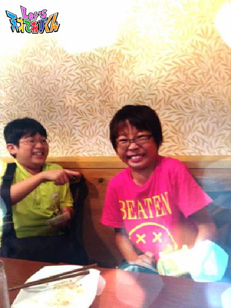
辻村君とご飯
この写真は、２年前に辻村君といっしょにご飯を食べたときのものです。
このとき、
２人はサラリーマンで、辻村君が部長役で、僕が課長役。
僕が部長の機嫌（ きげん ）をとらなければいけないという設定で、
辻村部長を笑わせて、２人とも大爆笑しているところです。
本当にサラリーマンのおじさんたちみたいでしょ（＾O＾）/
このころから、辻村君とどんどん仲良くなりました！
もうひとつは、保育園のころお母さんからケータイを借りて、
うれしくて、ビルやお花屋さんのパンダの飾りや、
黄色くなったイチョウ並木などなど、
目についたものをいろいろ撮りました。
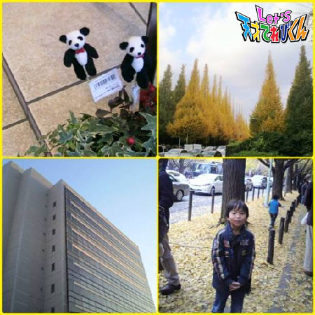
僕が写っている写真以外は自分で撮りました！
写真はあとで見たら
その頃のことを思い出して楽しくなりますね～。
これからもたくさん自分で撮ったり、みんなで撮ったりしたいです。
投稿者:林武尊 | 投稿時間:18時45分 | カテゴリ：てれび戦士 | 固定リンク
とっておきの写真！［杉本瑛］
みなさん、メル ハバ（ トルコ語で「 こんにちは 」）！
杉本瑛です！
今回のお題は「 とっておきの写真！ 」です （＾∇＾）
てれび戦士みんなとの思い出の写真がたーーーくさんあって、
その全部が瑛の宝物で、とっておきの写真なんです^_－☆
たくさんあって、本当はもーーーっと紹介したいけど、
涙をのんで厳選した３枚をどうぞ！↓
まずは、沖縄どちゃもん・ぱんがやしゃーんを探しに
竹富島（ たけとみじま ）に行くフェリーの中での１枚 ☆
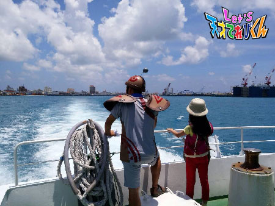
フェリーに乗れたのがうれしくて、益子18号さんとキャアキャア騒いでました （＾_＾）
青い海がラピスラズリのようにキラキラと光っていて、
とてもきれいだったのを覚えてます。
これは、熊本城での１枚。
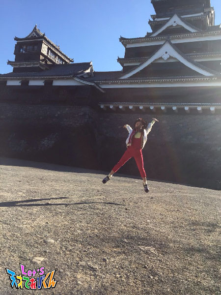
天守閣（ てんしゅかく ） 前でとびきりのジャーンプ！！
風が気持ちよかったです (^○^)
最後の写真は、宮城どちゃもん・ぎやみを追い詰めた海岸で、、、
福田17号さんと武尊くんと「 シェ～～～～～！ 」の１枚！
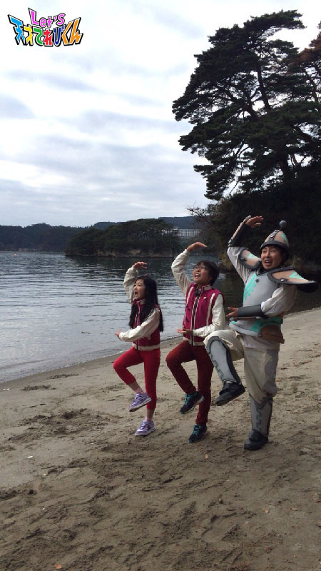
３人がピシッとそろってて、
一瞬「 宝塚の写真かな？ 」と思っちゃいました（≧∇≦）
これからもとっておきの写真が増えますように ☆彡
投稿者:杉本瑛 | 投稿時間:18時45分 | カテゴリ：てれび戦士 | 固定リンク
ページの一番上へ▲